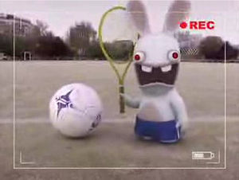

Balón
 De: La Frikipedia, la enciclopedia extremadamente seria.
De: La Frikipedia, la enciclopedia extremadamente seria.
 el primer balón de fúrbol
Objeto de forma redonda utilizado desde tiempos inmemoriables por las mujeres en su plan secreto para la dominación mundial. Se sirven de él para mantener a los maridos alejados del hogar a la hora en que termina la jornada del butanero o, en su defecto, mantenerlos alejados de la cocina para evitar la ingesta sistemática de los ingredientes de la paella del domingo. En la actualidad se utiliza para tener entretenido a un puñado de hombres-anuncio millonarios semianalfabetos que corren detrás de tan preciado objeto fetiche.
Estructura
Los balones está formados por los siguientes componentes y partes:
- Jugador: Si es pobre o menor de edad, se llama "jugador amateur" y suele estar relleno de cerveza en caso de ser adulto, o bocata Nocilla en caso de ser niño. Crecen en los descampados y los patios de colegio y suelen acompañar al balón en grupos de 12 o más individuos. Si el jugador es multimillonario y gusta de combinar tonos pastel con cadenas de oro y pendientes de diamantes el balón se llama "esférico".
- Piel o cubierta: Parte exterior del balón. puede ser de pellejo de cabra, metacrilato, antracita, cáscaras de pipa, cartón-piedra, oro y platino o intestino de gato capao. Su finalidad es rodar hacia el punto más peligroso e inaccesible de la ciudad y poner en peligro a su propietario. Si se le ata una cuerda y se añaden tachuelas, pasa a convertirse en un práctico ahuyentador de suegras.
- Gas: es la sustancia en estado gaseoso la cual mantiene al balón en buena condición, gordito y bonito para que pueda ser golpeado y expulsado por la prolongación más alargada del jugador (lèáse PIERNA).
Los balones de mala calidad sólo cuentan con dos partes: el jugador y el gas como estos objetos son tan simples no merecen una explicación muy amplia y así evitamos problemas con tu cerebro.

Sr. Balon en un dia normal de trabajo.
El primer balón de la historia tenía forma plana y surgió en el año 33 D.C. cuando una hostia le cayó a San Pedro de la mano debido al Parkinson y llegó rodando a la calle, donde fue alabada como "La Sagrada Hostia de Cristo a San Pedro". La persecución de la hostia por las empinadas calles se convirtió en deporte nacional. En el 666 D.C. alguien sustituyó la hostia por un queso y nació el balón esférico tal y como lo conocemos en nuestros días.
Los dos primeros balones esféricos utilizados por la Humanidad se conservan fosilizados bajo las patas de los leones del Congreso en Madrid.
Grandes Momentos de la Historia protagonizados por balones
- Partido de fútbol de Cristo reencarnado a trozos en Maradona ("La Mano de Diox")
- Una pelota marciana impacta contra la tierra provocando la extinción de los dinosaurios (excepto el Penedector )
- Un balón de fútbol impacta contra la boca de la Duquesa de Albal afectando al habla de la misma
- 345.759.786 seguidores de la Secta El Balón de Jehová se suicidan en un lavabo público de Joy Eslava
- Joan Gaspar y otros dos peces gordos del mundo deportivo regalan a Jesucristo un balón de plata, un balón de mirra y un balón de incienso.
- Sauron recibe un pelotazo en el ojo y pierde la lentilla
- Oscar a la mejor película de habla no inglesa por "Todo sobre mis Costuras"
- En la creación de el mundo
- Garganta Profunda II: El balón que me amó
EFECTOS ADVERSOS Y ADVERTENCIAS
- Todo niño viene con un balón debajo del brazo. Si lo sabe usar, le sacarán a Ud. y a su familia de la pobreza, pero dañará irreversiblemente las áreas del cerebro encargadas del vocabulario, expresión corporal, buen gusto y sentido de la responsabilidad.
- Un balón de fútbol tiene un poder de atracción irresistible para cualquier hombre heterosexual entre los 2 y los 99 años de edad.
El hermano gemelo malvado de Sr. Balon.
- Nunca combine un balón de fútbol con una pizza: el resultado es el "efecto llamada de amigotes gorrones" que requieren grandes dosis de cerveza. Provoca anorexia en su frigorífico.
- Nunca dé de comer a un adicto a los balones después de media noche.
- Si el balón sufre una rotura o pinchazo, la forma correcta de arreglarlo es tirándolo a la basura y comprando otro. cualquier otro intento de repararlo irá acompañado de dos docenas de "eres un inútil" y "ya te lo dije" de cualquier mujer que le vea intentarlo infructuosamente.
- La forma correcta de limpiar un balón es dejándolo rodar lleno de mierda por el parquet: la suciedad del balón atrae irremediablemente a una mujer con una bayeta.
- Las mujeres que se incorporan balones de silicona en el cuerpo tienen el éxito asegurado entre todos los hombres del mundo.
¿Sabías que..
- ...mientras lees este artículo hay al menos 1 persona leyendo por encima de tu hombro?
- ...tu padre en realidad pensaba que había engendrado un balón?
- ...lo primero que hace falta para matar a un perro es que esté vivo?
- ...un balón digievoluciona a consulta de dentista si lo dispara Roberto Carlos?
- ...balón + pizza + birra = felicidad masculina?
- ...balón + analfabeto + dinero = felicidad femenina?
- ...el único hombre al que no le gusta el fútbol es al butanero?
- ...tu balón te adora?
Autor(es):
- Cymmeria
- Veni Vidi Vici
- Mel-o
- Morferico
- Bladguer
- Harry El del Pote
- Law ripley
- Miguelvalverde
- Darth Dominus
- Luxi
Frikipedia 2005-2016, Licencia
GFDL 1.2 - Extraído por FrikiLeaks